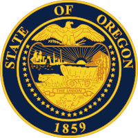

Program on Incresing School Donations
Education is critical to ensuring that every Oregonian is prepared for success in a global economy, has economic security, and has the ability to provide for themselves and their families. Education promotes shared values, enriches culture and expands the vitality of individuals and communities. When delivered equitably, education provides opportunity for every Oregonian no matter their race, home language, disability, family income or zip code. Never before has a high-quality education been more important to the lives and well-being of individuals and our communities.
Our main goal is to increase fundings for all public schools in the State of Oregon.
We can see that right now there is no fair distribution, funds do not reach schools in a poor regions.
Virtually no resources available to support technological upgrades for school. We live in a digital world and every child should have access to modern technology.
- Complete a strategic plan that clearly communicates out institution’s vision and the goals that will implement this vision.
- Determine the investment priorities that are needed to achieve the vision, including current and aspirational needs.
- Engage internal and external leaders in vetting these priorities and illustrating the outcomes and impacts.
Our Goals
- 40 percent of adult Oregonians will have earned a bachelor’s degree or higher,
- 40 percent will have earned an associate’s degree or postsecondary credential as their highest level of education attainment, and
- 20 percent will have earned at least a high school diploma, an extended or modified high school diploma, or the equivalent of a high school diploma as their highest level of education attainment. These goals reflect a shared commitment by the state and education groups to create the conditions to ensure each young person has access and opportunities throughout their education to thrive and to pursue an education and career path meaningful to them.
